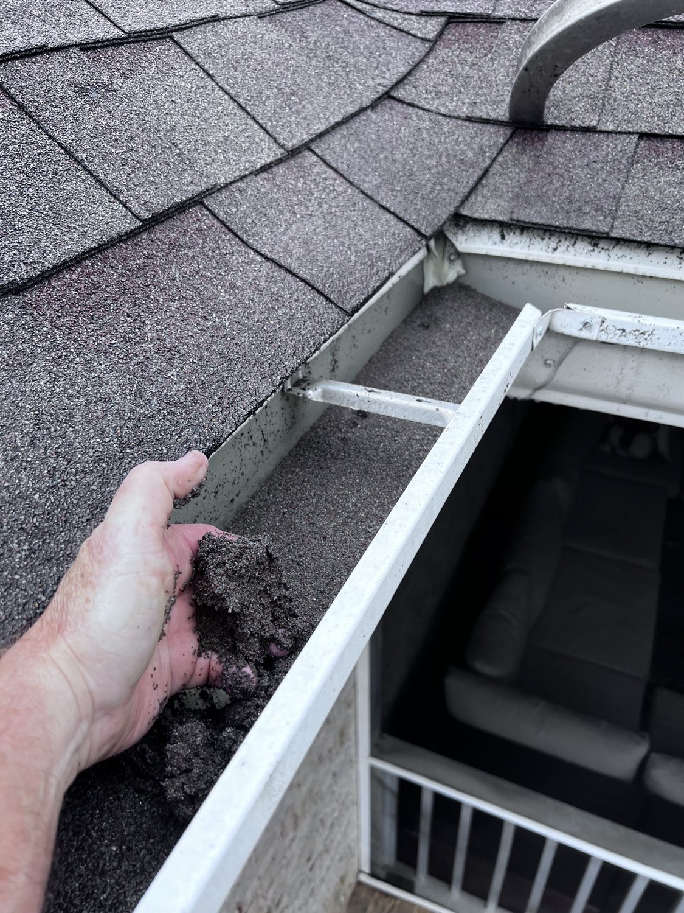

From the blog
When to Clean Your Gutters in Mobile, AL
October 12, 2026

Mobile is hard on gutters. Between the pine trees dropping needles year round, live oaks shedding leaves, and our heavy Gulf rain, a gutter that looked fine in summer can be packed solid by fall. Clogged gutters do not just overflow. They push water behind your siding, rot your fascia boards, stain your brick, and send water straight toward your foundation. Here is how we think about it on our own routes from Midtown to West Mobile.
How often do gutters need cleaning here?
Twice a year is the baseline for most Mobile homes: once in the spring after pollen and seed pods, once in the fall after the leaves drop. If your house sits under big pines, like so many do in Tillmans Corner, Theodore, and Saraland, you may need a third cleanout to keep up with the needles. Pine needles mat together and form a dense layer that regular rain will not wash out.
Homes in newer subdivisions out in Semmes and Satsuma with young trees can sometimes stretch to once a year, but watch them during hurricane season. One big storm can dump enough debris to fill a clean gutter in a single afternoon.
Signs your gutters are packed
- Water spilling over the edge during rain, or pouring off the roof line in sheets.
- Green stuff growing out of the gutter. Grass and even small plants root in packed debris.
- Gutters pulling away from the house. Wet debris is heavy, and it strains the fasteners.
- Stains on your siding under the gutter line, or mulch and soil washed out in your flower beds.
- Mosquitoes hanging around. Standing water in a packed gutter is a breeding ground.
- Water pooling near your foundation after rain because the downspouts are not draining.
What a professional cleanout covers
Our gutter cleanout covers scooping out all debris by hand, clearing the downspouts so water flows freely, and bagging everything for removal. We do not just knock it loose and leave it on your roof. We check that each downspout drains and that the gutters still slope the right way. If we spot a loose bracket or a separated seam while we are up there, we will tell you plainly before it becomes a bigger repair.
DIY or call us?
A single story ranch in Midtown with stable ground is a fair DIY job if you are comfortable on a ladder. Anything two story, anything on a slope, or anything with gutters you have not touched in years is worth calling in. Two story homes are custom quote because of the ladder work and extra safety setup. Falls from ladders send thousands of people to the ER every year, and no gutter is worth that.
What it costs
Our one story gutter cleanout is $179. That covers a full debris removal and downspout clearing for most single story homes around Mobile. Two story homes are custom quote since every house is different. Fair pricing, done right, no surprises.
Pair it with a house wash
Here is the move a lot of our customers make: clean the gutters and soft wash the house in the same visit. The same rain that packed your gutters probably left green growth on your siding too. Knocking out both at once means one visit and a home that looks brand new. Ask us about bundling when you call.
Gutters packed? Let us handle the ladders.
Kinney Cleaning Services does gutter cleanouts across Mobile County. Veteran owned and operated, with 5-Star Google Reviews.
Call (251) 767-0754 Get a Custom Quote